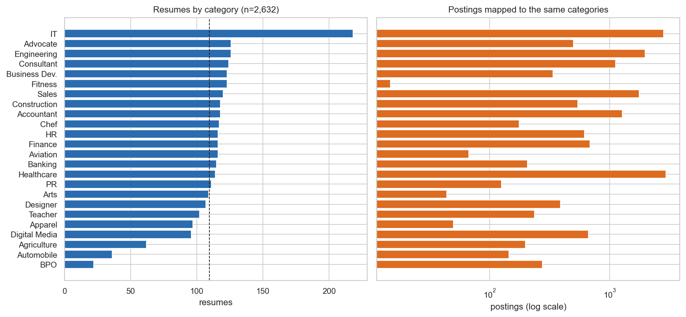
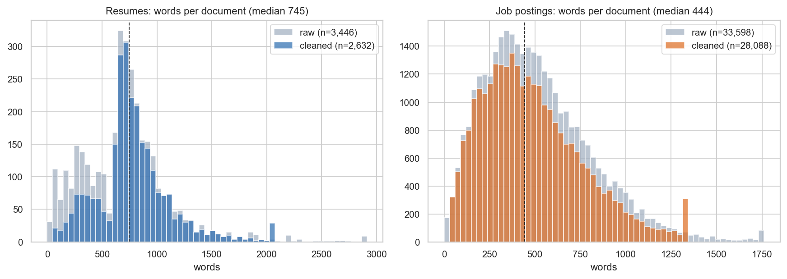
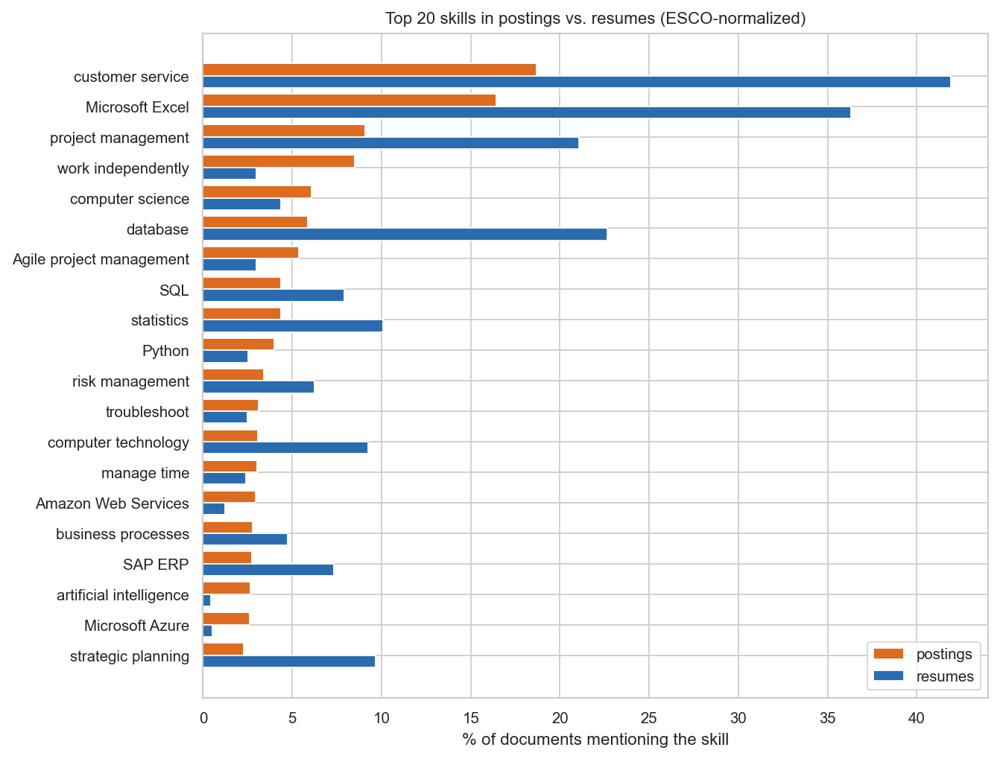
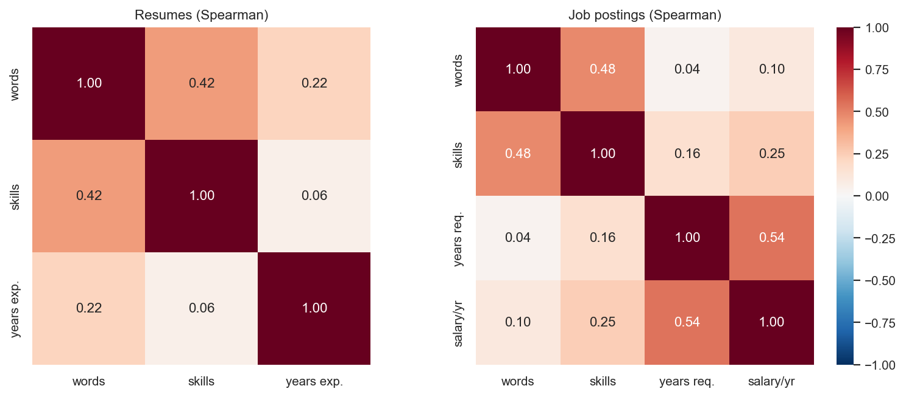
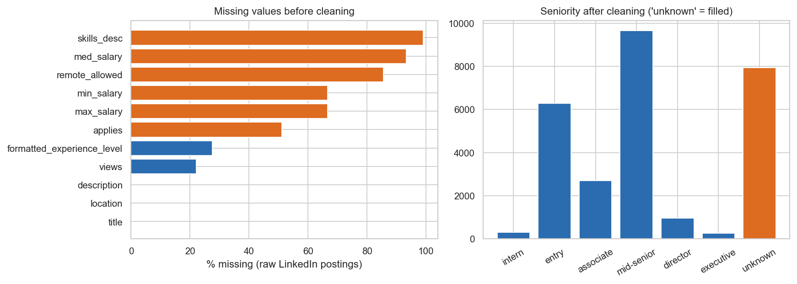
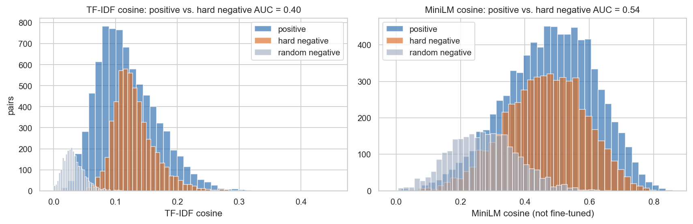

| Member | Roll No. / Section |
|---|---|
| Muhammad Sufyan | 24L-2601 / BSDS-5B |
| Muaaz Fahad | 24L-2563 / BSDS-5B |
| Hanan Ishaque | 24L-2537 / BSDS-5B |
Resumatch is a web application that matches resumes and job postings in both directions. A job seeker uploads a CV and receives the three best-matching open job postings they can apply to. Each comes with a direct apply link, an ATS-style score for that specific posting, the matched and missing skills, and suggested rewrites of weak resume bullets. Recruiters upload a job description together with a batch of CVs and receive a ranked, explained shortlist. The matching, ranking, and skill-extraction components are models we train or fine-tune ourselves; external LLM APIs are used only in supporting roles (pre-labelling, synthetic data generation, and natural-language explanations).
This document covers Phase 1 (Problem Definition) and Phase 2 (Data Acquisition &
Preprocessing). Unlike a plan, every number reported in Phase 2 was produced by the scripts in
the project repository (data_scripts/) and is regenerated automatically into this report
from report/stats/*.json.
Hiring is a two-sided matching problem that both sides handle poorly.
For candidates. Many applicants, especially fresh graduates, write one generic CV and send it everywhere, and rarely learn why they were not shortlisted. Applications are first screened by Applicant Tracking Systems (ATS) and by recruiters who spend very little time per CV, so a strong candidate can be filtered out because the resume does not surface the skills a posting asks for, or describes them in different words (“built REST services” versus “API development”).
For recruiters. A single posting can attract far more applications than can be read carefully. Keyword filters are the usual remedy, but they reward keyword stuffing and miss capable candidates who phrase their experience differently.
The gap. Existing tools are mostly either (a) simple keyword counters or (b) paid, closed products that give a score without explaining it. There is little transparent, evaluable tooling that (i) ranks in both directions, (ii) explains the specific missing skills, and (iii) is audited for bias against attributes such as name, gender, or university. Our own data (Section 9) confirms the vocabulary problem: 976 of the 2,278 distinct skills requested in postings never appear in any resume, and 22 of the 100 most requested skills appear in fewer than 1% of resumes.
A rule-based system cannot solve this problem well, for four reasons:
Evidence from our data. For every resume we mined hard negatives: postings from a different occupation that are lexically close to the resume. They are as similar to the resume as true same-occupation positives (mean TF-IDF cosine 0.13 vs. 0.12). Because hard negatives are mined with TF-IDF, that baseline is disadvantaged by construction (AUC 0.40). The independent, off-the-shelf MiniLM sentence encoder does only slightly better, at AUC 0.54, barely above chance. Telling the right role from a similar-sounding wrong one therefore needs encoders fine-tuned on our pairs, which is the Phase 3 plan. Our keyword-style baseline ATS score (Section 8) shows the same pattern: it separates positives from random negatives (AUC 0.73) but not from hard negatives (AUC 0.52). Machine learning also allows measurement: precision@k, NDCG, and bias tests can be computed for a trained model and compared against keyword baselines.
| # | Feature | Description | Core model |
|---|---|---|---|
| 1 | Top-3 job matches | The three best open postings for an uploaded CV, each with an apply link | Bi-encoder + reranker |
| 2 | Per-job ATS score | 0–100 score for each recommended posting: skill coverage, experience fit, title match, resume structure | Skill NER + learned weights |
| 3 | Skill-gap report | Matched and missing skills per posting, with a suggested learning order | Skill NER + ESCO |
| 4 | Candidate ranking | Ranked shortlist of CVs for one job (recruiter mode) | Bi-encoder + reranker |
| 5 | Bullet rewriter | Rewrites weak CV lines for a target job | LLM (API) |
| 6 | Skill normalization | Maps variants to a standard skill taxonomy | NER + ESCO mapping |
| 7 | Evaluation & bias dashboard | Metrics, baselines, counterfactual bias tests | — |
Job-seeker flow. The user uploads a resume, and the system extracts its text, skills and years of experience. The candidates are only postings that are still open and have an apply link: the open-jobs pool (Section 6). The bi-encoder retrieves the closest postings from this pool, and the reranker orders them. For each of the top three, the user sees the posting details, closing date, apply link, ATS score and skill gap. Postings past their closing date are never shown.
Role of external APIs. Pretrained LLM APIs are used to (i) pre-label CV–job pairs and generate synthetic CVs for training data, (ii) act as a zero-shot baseline in the evaluation, and (iii) produce user-facing explanations and rewrites. The retrieval (bi-encoder [6]), reranking (cross-encoder [7]) and skill-extraction models are our own fine-tuned models. Every API call is logged.
Success criteria. Job recommendation: precision@3 and NDCG@10 on the human gold set, compared with BM25/TF-IDF and zero-shot LLM baselines; candidate ranking is evaluated the same way. ATS score: rank correlation with the human fit labels (gold set and the external No / Potential / Good Fit pairs), and better than the baseline score in Section 8. Skill extraction: span-level F1 against the ESCO dictionary baseline. Bias: change in score under counterfactual swaps of name, gender, and university should be statistically indistinguishable from zero.
| Source | Content | Method | Raw | Clean |
|---|---|---|---|---|
| Kaggle Resume Dataset [1] | Resume text, 24 job categories | Download | 2,484 | 2,473 |
| Kaggle Updated Resume Dataset [2] | Resume text, 25 tech-heavy categories | Download | 962 | 159 |
| Kaggle LinkedIn Job Postings [3] | Title, description, location, level, salary; closed in 2023–24, so training only | Download | 33,246 | 27,740 |
| Rozee.pk postings | Current Pakistan-based postings incl. skills tags, career level, city, apply URL and closing date | Python scraping | 352 | 348 |
| ESCO v1.1.2 skills [4] | 13,896 skills, 99,192 alternative labels | Download (CSV) | 13,896 | — |
| Resume–JD fit pairs [5] | Human-labelled No / Potential / Good Fit pairs | Download | 6,241 + 1,759 | held out |
| Synthetic CVs | LLM-generated CVs for under-represented roles | API calls (logged) | script ready | |
| LLM-labelled pairs | poor / partial / good labels for built pairs | API calls (logged) | script ready | |
Evidence of collection. Each source has a script in data_scripts/:
download_kaggle.py (official Kaggle API when credentials exist, otherwise byte-identical
public mirrors on the Hugging Face Hub), download_esco.py, scrape_jobs.py,
generate_synthetic_cvs.py, and label_pairs.py. A download manifest records file
names, sizes, row counts and origin. Every LLM call goes through llm_client.py, which
appends the prompt, model, response, token usage and timestamp to logs/api_calls.jsonl
and caches responses so no call is paid for twice. The client works with any OpenAI-compatible
endpoint (OpenAI, Groq, Gemini).
Scraping policy. The scraper downloads and obeys robots.txt for every URL,
waits 2–3 s between requests (adaptive), sends a descriptive user agent, doubles its delay on HTTP 403/429,
and stores only public posting text (title, company, city, description, skills tags, career
level, experience). It reads structured data from the schema.org JobPosting block on
each page rather than brittle HTML selectors. Postings were collected for 19 of
33 planned search queries (software, data, design, finance, banking, marketing,
HR and sales). When the site began rate-limiting (87 of 555 requests
answered HTTP 403), the scraper backed off and, after five consecutive blocks, stopped as the
policy requires, so the current Pakistani sample is tech-heavy. On a refresh attempt on
2026-10-24, Rozee.pk answered the request for robots.txt itself with HTTP 403. The
scraper treats this as the whole site being disallowed and made no further requests; we do not
work around blocks (for example, by changing the user agent). All requests are logged to
logs/scrape_rozee.log. Data is used for academic purposes only.
Open-jobs pool. Users are only matched against postings they can
still apply to. live_pool.py keeps the Rozee.pk postings that have an apply URL and
whose closing date has not passed, and stores them with their skills, required years and
embedding. LinkedIn postings closed in 2023–24 and are excluded automatically by the same
date check; they remain training data. On 2026-10-24 the pool holds 348 open postings,
but they close quickly: 340 close within seven days (median 4.1 days left), and
49% are IT roles. The pool therefore has to be refreshed every few days
(make refresh scrapes new postings, then reruns cleaning, features and the pool). Because Rozee.pk currently blocks our crawler, Section 12 lists the
alternatives we are pursuing.
Gold set. sample_gold_set.py draws 200 pairs only from the test
split (50% positives, 30% hard negatives, 20% random negatives; pair type hidden from
annotators). Two members label them independently using written guidelines, and the script
reports Cohen's κ (plain and linearly weighted) and flags disagreements for
adjudication. This set is never used for training.
All cleaning is implemented in Python (pandas, regex, scikit-learn) in
data_scripts/clean_resumes.py and clean_jobs.py, with shared utilities in
common.py. Table 3 lists each step and its measured effect.
| Issue | Handling | Resumes | Postings |
|---|---|---|---|
| Loaded | All sources merged into one schema | 3,446 | 33,598 |
| Missing values | Drop records with empty text or title. Fill missing categorical fields
(location, seniority, work type) with unknown. Salary is never a model input; it is
normalized to yearly values for analysis and left as NaN when missing (39.8% available). | −1 | −1 |
| Encoding noise | Repair mis-decoded UTF-8 (“Naïve” → “Naïve”), NFKC normalization | 38 fixed | — |
| Noise | Strip HTML tags and entities, URLs, EEO/legal boilerplate, non-printable characters | all | all |
| Non-English | Stop-word ratio test (English vs. Spanish/French/German/Portuguese) | −0 | −23 |
| Exact duplicates | SHA-1 hash of normalized text | −798 | −3,236 |
| Near-duplicates | TF-IDF cosine similarity >0.95 (reposted postings, copied CV templates) | −8 | −2,085 |
| Closing dates | Keep apply URL, posting and closing dates. Postings are sorted by closing date first, so deduplication keeps the copy that is still open; closed postings stay in the training data but never enter the open-jobs pool | — | 348 open |
| Outliers | Flag below 1st / above 99th percentile of word count (IQR fences as cross-check: 222 / 532 flagged). Drop clear junk (resumes <50, postings <30 words); truncate long texts at the 99th percentile | −7; 27 capped | −165; 283 capped |
| Personal data | Replace emails, phone numbers, URLs and street addresses with
[EMAIL], [PHONE], [URL], [ADDRESS] before any storage or API call
(optional spaCy NER for names) | 117 masked | 4,821 masked |
| Final | 2,632 | 28,088 |
Notable findings: the Updated Resume Dataset is mostly duplicates (796 of its 962 rows), and the Kaggle resumes still contained real-looking phone numbers and addresses (299 tokens masked), so anonymization is necessary rather than precautionary. Removed near-duplicate pairs are saved for inspection, not silently discarded.
Implemented in data_scripts/build_features.py and skills.py. All fitted
transformers (scaler, encoder, TF-IDF vocabulary) are fitted on the training split only.
all-MiniLM-L6-v2 [6], to be fine-tuned in Phase 3.MultiLabelBinarizer) over a vocabulary
of 1,168 ESCO skills seen in at least five training documents.StandardScaler.ats_score.py scores one resume against one
posting from 0 to 100 as a weighted mean of four components: skill coverage (share of the
posting's ESCO skills found in the resume, weight 0.50), experience fit (resume years divided by
required years, capped at 1, weight 0.20), title match (share of the posting title's content
words found in the resume, 0.15) and resume structure (contact details, experience, education
and skills sections present, 0.15). A component the posting does not specify, such as required
years, is left out and the remaining weights are rescaled. The missing skills
form the skill-gap report. On the 2,352 test pairs the mean score is 44.7 for positives,
43.3 for hard negatives and 31.4 for random negatives. Phase 3 replaces the skill
component with the NER model and learns the weights from the gold set.All charts are produced by data_scripts/eda.py on the cleaned data.





unknown instead of being guessed.
Further observations. (1) The Kaggle resumes are written by experienced professionals (median well above ten years of experience), while our primary users are fresh graduates; synthetic entry-level CVs and the Pakistani postings address this domain gap. (2) The LinkedIn postings are US-based. The Rozee.pk data adds local titles, cities and skill tags; its most requested skills are artificial intelligence, Python, computer science, CI/CD, Git. (3) 8 of the 348 Rozee.pk postings state an explicit gender preference (7 male, 1 female). We keep this field for the Phase 4 bias analysis and never use it as a model input.
resumatch/ |-- README.md # setup, pipeline, data sources |-- Makefile # pipeline targets; make refresh updates the job pool |-- requirements.txt |-- .env.example # LLM / Kaggle keys (real .env is git-ignored) |-- .gitignore # excludes raw data, models, API keys, API cache |-- data_scripts/ | |-- common.py # paths, noise removal, PII masking, dedup helpers | |-- download_kaggle.py # Kaggle API or HF mirrors + manifest | |-- download_esco.py | |-- scrape_jobs.py # Rozee.pk, robots.txt-aware, rate-limited | |-- llm_client.py # OpenAI-compatible client, JSONL logging + cache | |-- generate_synthetic_cvs.py # API, logged | |-- label_pairs.py # API, logged | |-- clean_resumes.py | |-- clean_jobs.py | |-- skills.py # ESCO gazetteer: extraction + normalization | |-- build_features.py # features, splits, pairs, embeddings | |-- live_pool.py # open, applyable postings users are matched against | |-- ats_score.py # baseline per-job ATS score + skill gap | |-- sample_gold_set.py # gold set sampling + Cohen's kappa | `-- eda.py |-- data/ # raw/ interim/ processed/ gold/ (git-ignored) |-- logs/ # api_calls.jsonl, scrape log |-- notebooks/ |-- report/ # LaTeX source, figures, stats, PDF build `-- app/ # Phase 5 (Streamlit/Gradio)
| Item | Status |
|---|---|
| Kaggle resumes and postings, ESCO taxonomy downloaded | Done |
| Rozee.pk scraper with robots.txt, rate limiting and logging | Done (352 postings) |
| Cleaning, anonymization, deduplication, outlier handling | Done |
| Skill gazetteer, TF-IDF, multi-hot, numeric features, MiniLM embeddings | Done |
| Leakage-free splits and 15,755 weakly labelled pairs | Done |
| Open-jobs pool with apply URLs and closing dates | Done (348 open on 2026-10-24) |
| Baseline per-job ATS score and skill gap | Done (Phase 3 replaces it) |
Regular Rozee.pk refresh (make refresh) | Blocked by robots.txt |
| EDA figures | Done |
| Synthetic CVs and LLM pair labels (scripts and logging ready) | Pending API key |
| Gold set: 200 pairs sampled; double annotation and κ | Pending manual labelling |
| Risk | Mitigation |
|---|---|
| Open-jobs pool goes stale (Rozee.pk currently blocks our crawler) | Never show closed postings. Ask Rozee.pk for permission or a data feed; evaluate official job-search APIs and other Pakistani job boards that allow automated access; refresh every few days once a source is available. Until then, the Rozee.pk postings stay in the data for training and evaluation. |
| Pool is tech-heavy (49% IT) | Broaden queries to the uncovered categories once crawling is allowed; show the score honestly so weak matches look weak. |
| Noisy weak / LLM labels | Hand-verify a sample, report agreement, and keep the gold test set human-labelled. |
| Small or imbalanced resume data | Synthetic CVs for rare roles, class weighting, stratified splits. |
| Domain gap (US, senior CVs vs. Pakistani graduates) | Rozee.pk postings, synthetic entry-level CVs, separate evaluation on local data. |
| Bias in data (gender, name, institution) | PII anonymized; posting gender preferences kept for auditing only; counterfactual swap tests in Phase 4. |
| API cost or rate limits | All responses cached; a small, cheap model for bulk labelling; exponential back-off. |
| Limited compute | Small models (MiniLM-class) trainable on a free Colab GPU. |
| Member | Responsibility in Deliverable 1 |
|---|---|
| Muhammad Sufyan | Repository setup, scraping scripts, data cleaning pipeline, report |
| Muaaz Fahad | Kaggle data cleaning review, EDA, gold-set annotation (annotator 1) |
| Hanan Ishaque | Feature engineering, synthetic CV generation, gold-set annotation (annotator 2) |